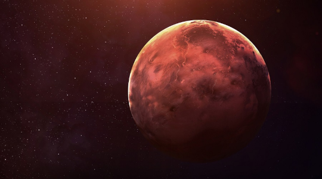
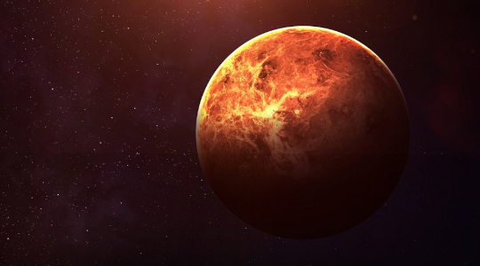
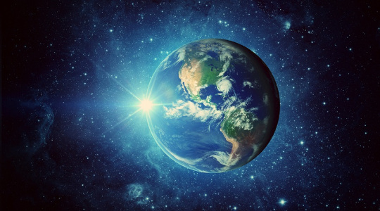
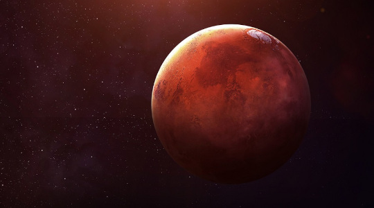
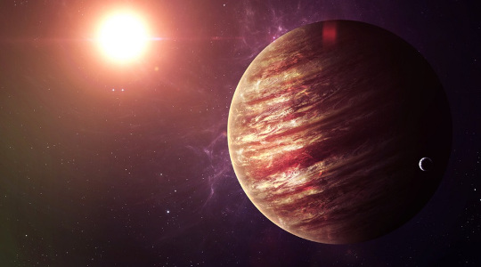
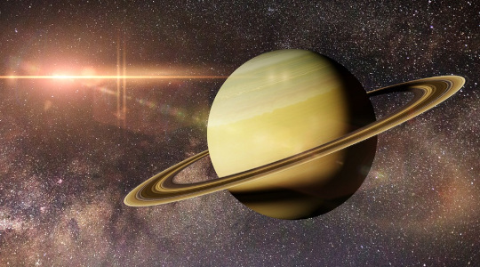
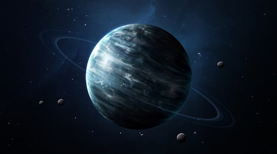
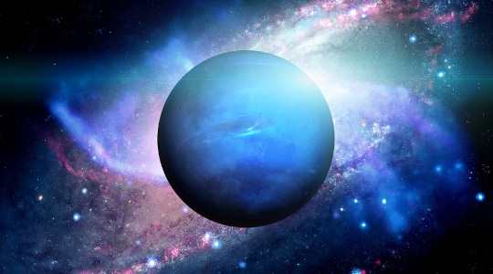

O Sistema Solar é composto por oito planetas, conforme se considera hoje em dia, além de planetas anões e corpos celestes, como asteroides, meteoros, cometas e satélites. O Sistema Solar, localizado na galáxia Via Láctea, consiste no conjunto de planetas, planetas anões e diversos outros astros do Universo, como asteroides, meteoros, cometas, satélites, entre outros. O Sol é a estrela central desse sistema, exercendo intenso domínio gravitacional sobre os demais corpos celestes.
1. Mercurio

Mercúrio é o planeta mais próximo do Sol. Esse planeta é capaz de refletir cerca de 12% da luz solar, sendo um dos astros mais brilhantes vistos da Terra. Encontra-se a cerca de 57.910.000 km do Sol.
Sua superfície é repleta de crateras, enquanto seu núcleo é rico em ferro, e a espécie de atmosfera existente no planeta é composta, em sua maioria, por hélio (98%) e hidrogênio (2%). A temperatura do planeta durante o dia atinge 430ºC.
2. Vênus

Vênus é o segundo planeta mais próximo do Sol. Além do Sol e da Lua é o corpo celeste mais brilhante no céu. Por isso, é chamado também de Estrela d'Alva, Estrela Matutina ou Vespertina, aparente no céu antes do amanhece e logo depois do entardecer.
A distância entre Vênus e a Terra é a menor distância entre planetas do Sistema Solar. Entretanto, Vênus é o planeta mais quente do Sistema Solar, sua temperatura média é de cerca de 460ºC, impossibilitando a visita de seres humanos no planeta.
O ano venusiano tem uma duração menor que o dia. O giro ao redor do Sol dura 224 dias terrestres, enquanto o giro em torno do próprio eixo leva 243 dias para se completar.
Outra curiosidade sobre Vênus é que é o único planeta do sistema solar que faz sua rotação no sentido horário, assim, ao contrário da Terra, o Sol nasce no oeste e se põe no leste.
3. Terra

A Terra é o terceiro planeta do Sistema Solar, o único que apresenta água em estado líquido e oxigênio em sua atmosfera, o que possibilita a vida no planeta.
O movimento de rotação da Terra dura 23 horas, 56 minutos e 04 segundos e o ano terrestre é de aproximadamente 365 dias e 6 horas. A temperatura média da Terra é de 14ºC.
4. Marte

Marte é o segundo menor planeta do sistema solar. É conhecido como "planeta vermelho" pela coloração de sua superfície. Marte possui duas luas em sua órbita chamadas de Fobos e Deimos. O ano em Marte dura 687 dias terrestres e o dia marciano é muito parecido com o da Terra, 24 horas e 35 minutos. Sua temperatura média é de -63ºC.
5. Jupiter

Júpiter é o maior planeta do Sistema Solar, a área da superfície é mais de 120 vezes maior que a Terra. Formado principalmente pelos gases hidrogênio, hélio e metano e, ainda, um pequeno núcleo sólido no interior. A temperatura média do planeta é de -108ºC.
O ano de Júpiter dura 11,86 anos terrestres e o dia tem a duração de 9 horas e 50 minutos. Júpiter possui 79 luas, a maior delas, Ganimedes, possui um diâmetro superior ao planeta Mercúrio.
6. Saturno

Saturno é o segundo maior planeta do Sistema Solar. É conhecido pelos anéis formados principalmente por gelo e poeira cósmica. O diâmetro do planeta é de cerca de 100 000 km e nos anéis chega a 270 000 km, com apenas 150 metros de espessura.
É composto, basicamente, de Hidrogênio (96%) e Hélio (3%). Sua temperatura média é de -139ºC. O Ano de Saturno dura 29,5 anos terrestres e o dia cerca de 10 horas e 35 minutos.
7. Urano

Urano é um planeta gasoso e sua atmosfera é constituída, principalmente, de hidrogênio, hélio e metano, com muita formação de gelo. É o planeta com a superfície mais fria do Sistema Solar, sua temperatura média é de -220 ºC.
Uma particularidade de Urano é a inclinação de seu eixo, praticamente horizontal(97º), faz com que o planeta gire de lado em relação aos outros astros. A duraçãodo ano de Urano é de 84 anos terrestres e o dia possui 17 horas e 14 minutos.
Por conta de sua posição em relação ao Sol, seus polos passam 42 anos (terrestres) iluminados seguidos de 42 anos de escuridão.
8. Netuno

Netuno é o planeta mais distante do Sol. Um gigante gasoso, tal como Júpiter, Saturno e Urano. O planeta possui uma intensa atividade em sua superfície com os ventos mais fortes do Sistema Solar, chegando a 2000 km/h.
O dia de Netuno dura cerca de 17 horas terrestres e o ano 164,79 anos na Terra. Sua temperatura média é de -201 ºC.